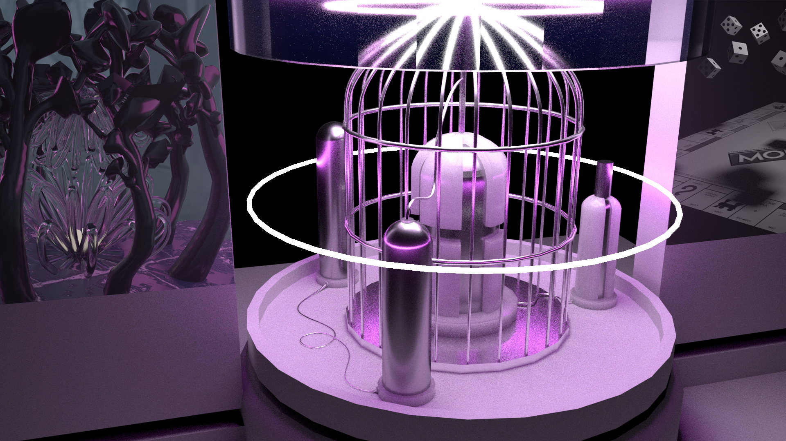
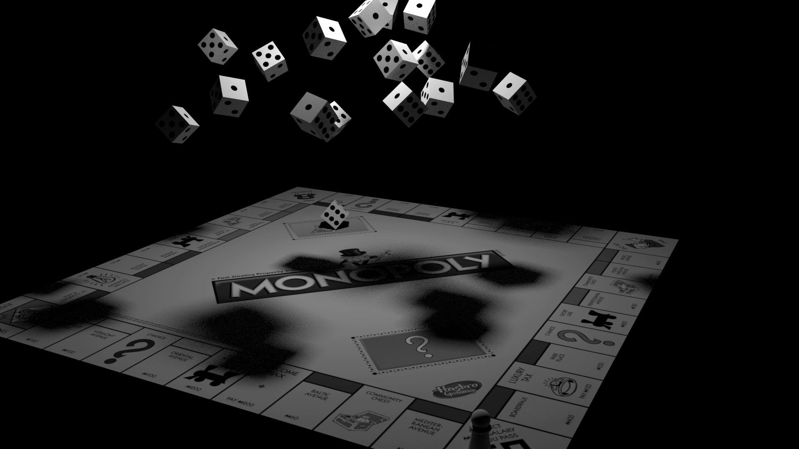
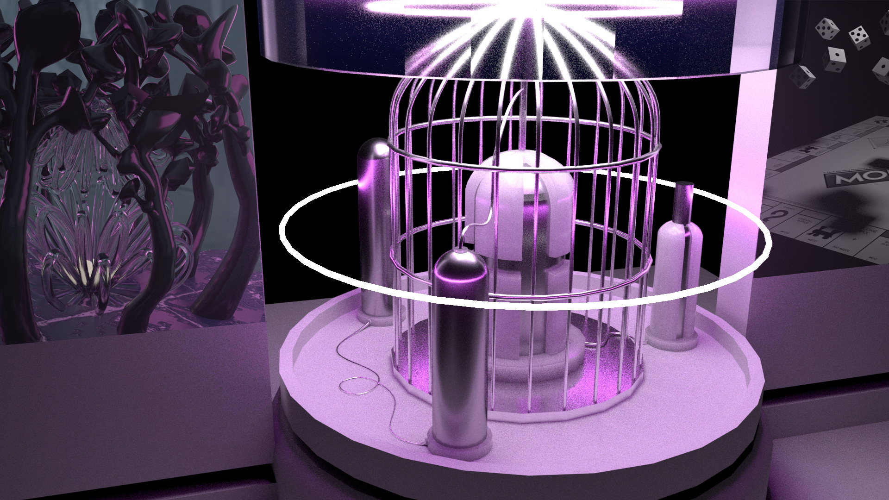
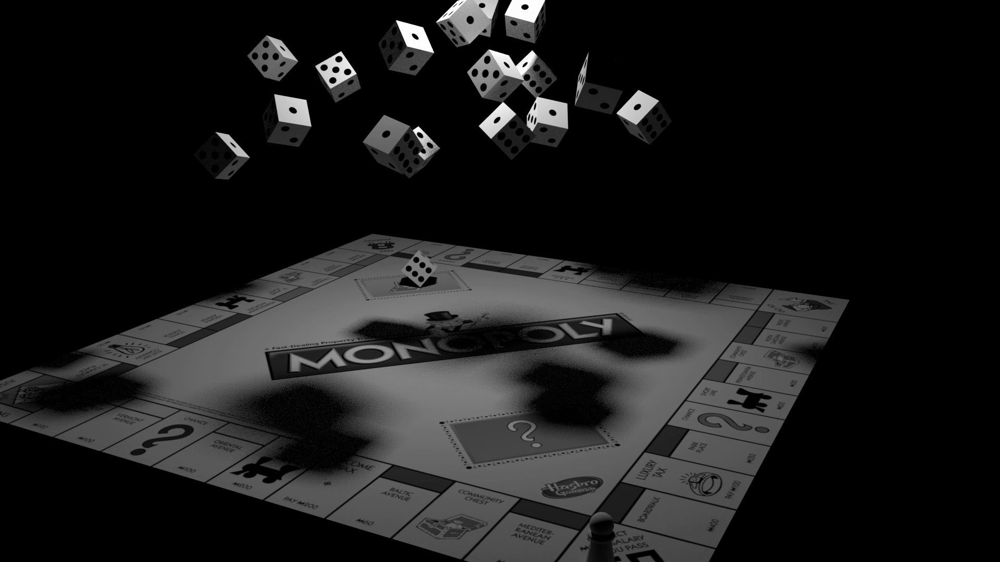

"Systemic Incubation" is a piece inspired by the concept of incubation in the realm of science fiction. The center of the piece contains one central system encased in a glass incubation chamber. The chamber is then connected to two large panels to the left and right of it which are projecting the two works, "The Cage" and "MonoBoard." "Systemic Incubation" is on display within a gallery of my own making in which the front of house consists of two stories, the first being the reception area and the second story being a balcony. The back of the gallery wherein "Systemic Incubation" resides consists only of one floor with an elevated ceiling and limited exposure to outside light. Ideally, the gallery would be located in a quiet commercial neighborhood.